×

Mahasiswa Sisystem Informasi Bisnis yang aktif mengembangkan potensi diri dalam dunia teknologi informasi.
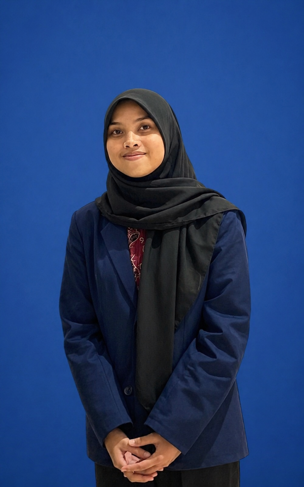
Currently studying at D-IV Business Information System
Mahasiswa semester 6 Program Studi D-IV Sistem Informasi Bisnis Politeknik Negeri Malang yang memiliki ketertarikan pada pengolahan data dan penerapan teknologi dalam mendukung kebutuhan bisnis. Saya memiliki semangat untuk tumbuh dan berkembang melalui pengalaman baru serta kerja sama tim yang efektif. Saya berkomitmen untuk berkontribusi dalam mengolah data menjadi informasi yang akurat dan bermanfaat untuk mendukung kebutuhan bisnis perusahaan.
Politeknik Negeri Malang
Semester 6
SMK Negeri 2 Blitar
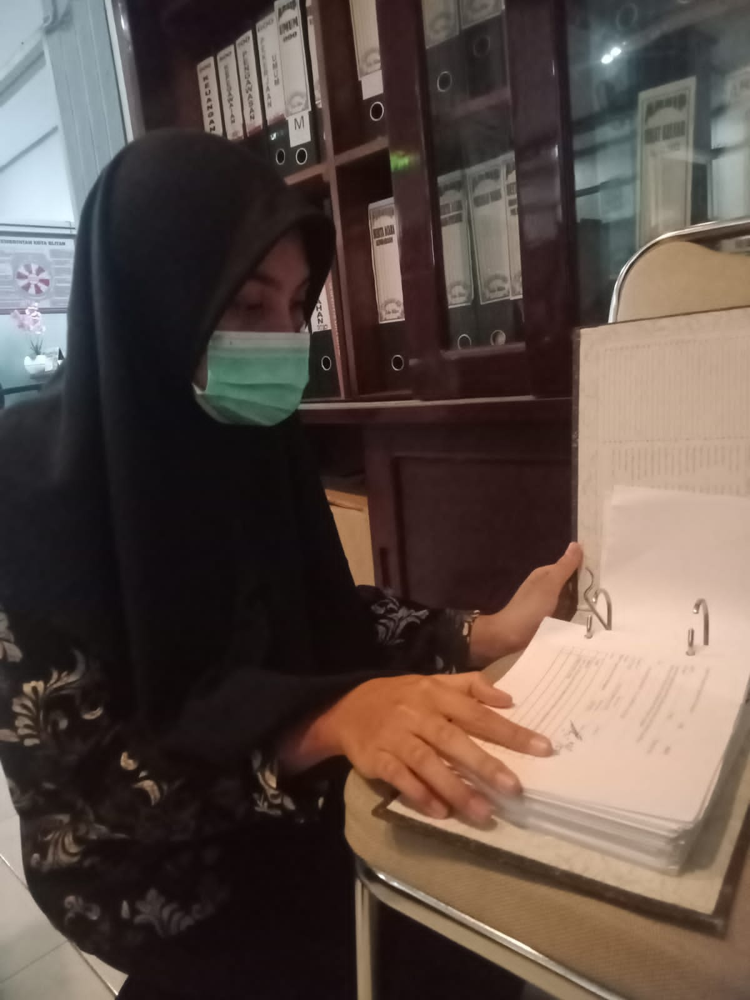
Pengarsipan Agenda Surat Masuk
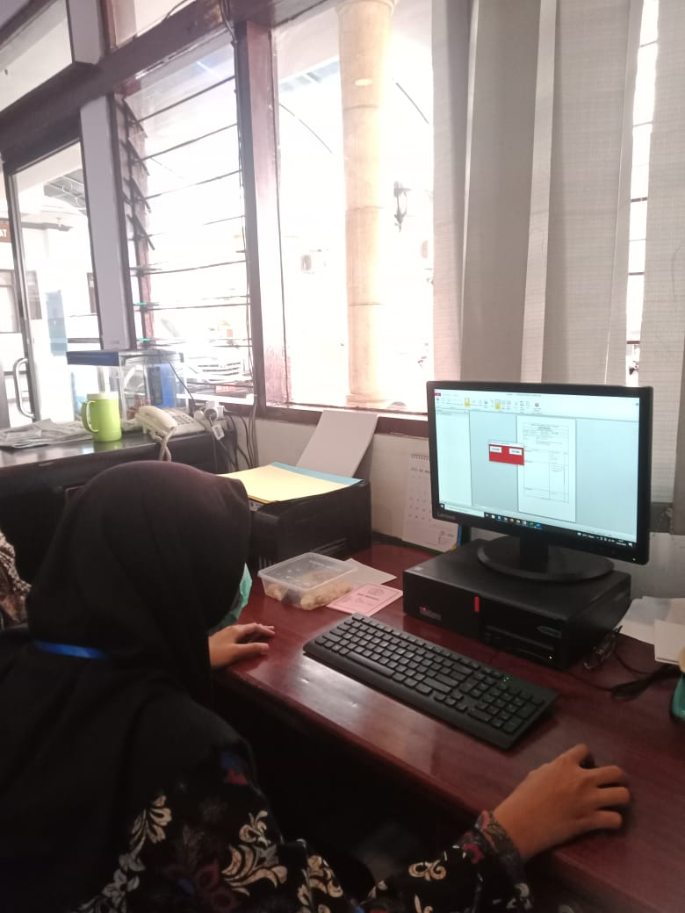
Melakukan entry surat masuk pada sistem
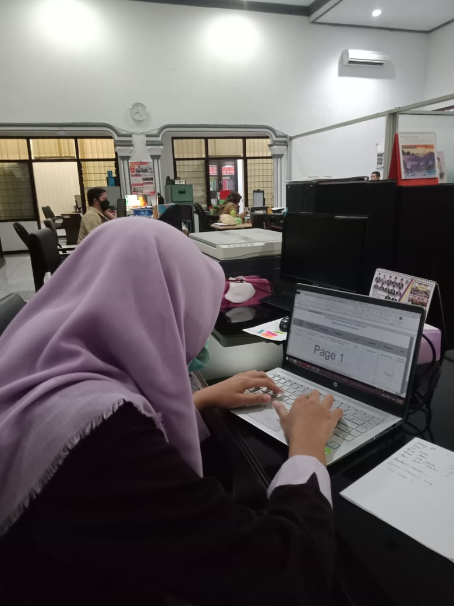
Pengelolaan data dan pelaporan menggunakan Excel
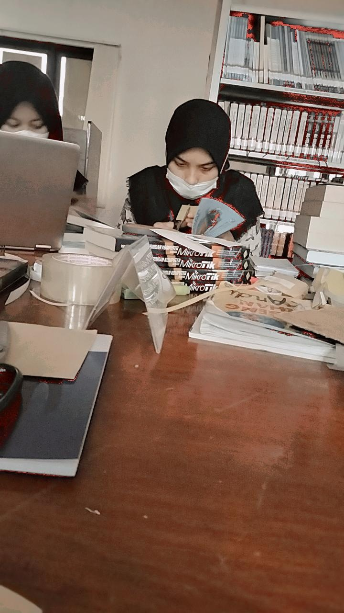
Melakukan pengolahan fisik buku
Bendahara | Bunga Wisuda

UKM Bhakti Kharya Mahasiswa
Bendahara | Bunga Wisuda
Nov 2023 - 2025
Beberapa proyek yang sudah saya kerjakan selama masa studi dan pembelajaran mandiri.
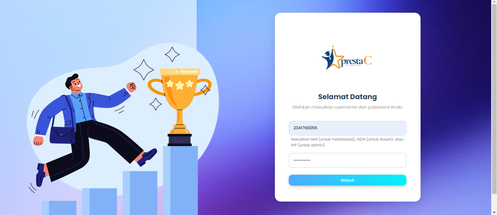
Perancangan sistem informasi prestasi mahasiswa berbasis web dengan menggunakan Laravel.
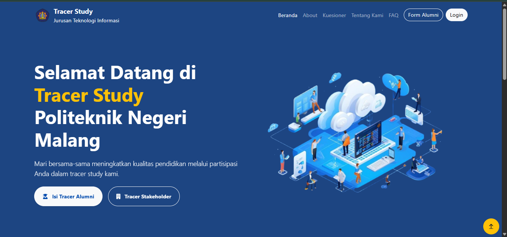
Tracar Study bertujuan melacak atau mengidentifikasi jejak atau perkembangan karier alumni setelah mereka lulus dari perguruan tinggi.
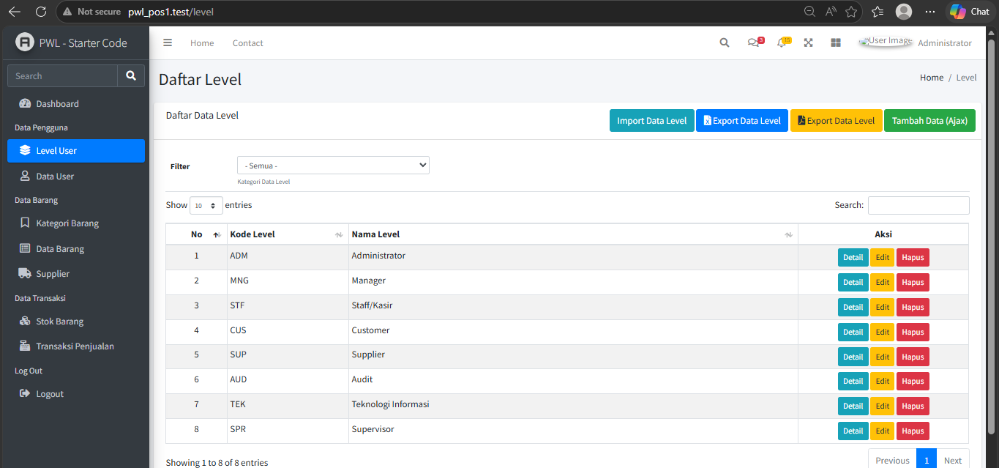
Admin LTE POS bertujuan untuk memudahkan pengelolaan transaksi dan data penjualan di sebuah toko.
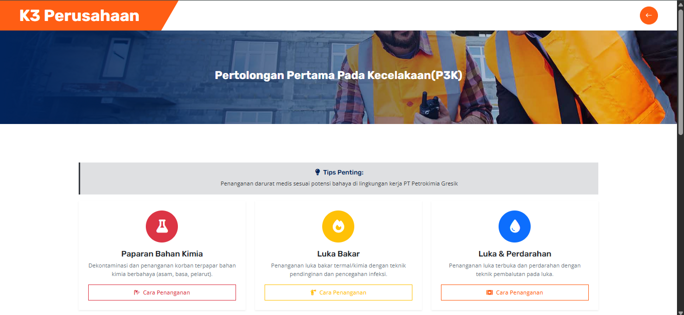
Perancangan Proyek Sistem Kesehatan dan Keselamatan Kerja untuk memenuhi kebutuhan kesehatan dan keselamatan kerja dengan studi kasus yang ada di perusahaan PT Petro Kimia Gresik.
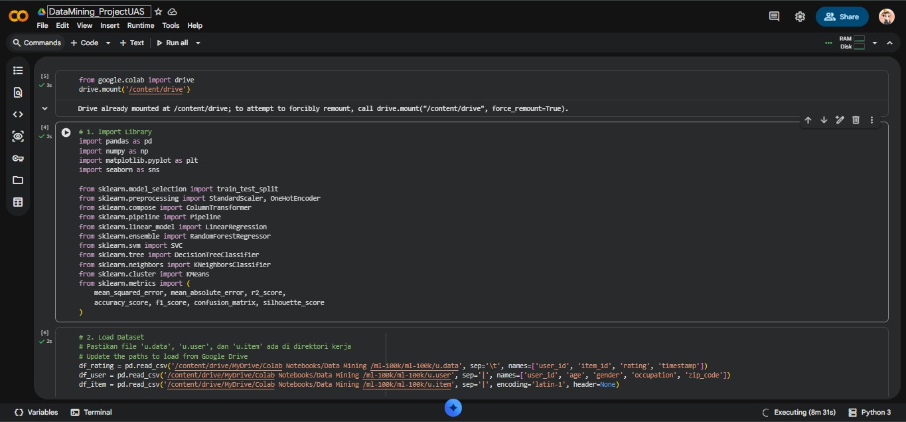
Implementasi teknik data mining dan clustering untuk mengidentifikasi pola strategis serta performa data guna mendukung pengambilan keputusan berbasis informasi studi kasus dataset MovieLens.
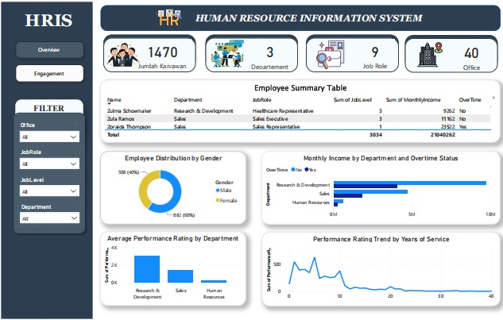
Visualisasi data performa menggunakan Power BI untuk mengetahui income, performance, dan kinerja karyawan dari setiap departemen.
Saya terbuka untuk kesempatan belajar, kolaborasi proyek, atau sekadar diskusi seputar data dan bisnis.